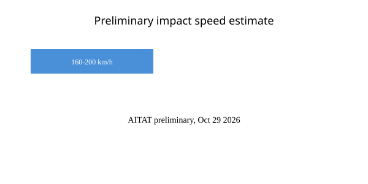

Toledo · ferrocarril · 30 de octubre de 2026
El informe preliminar de AITAT sitúa el impacto del AVE entre 160 y 200 km/h en Urda.

Lo que coinciden las redacciones
El 28 de octubre de 2026, alrededor de las 08:53 CET, un tren AVE de Renfe (servicio 2080, Clase 103) colisionó por detrás con un tren Iryo (servicio 6076, ETR1000) que se encontraba detenido en el kilómetro 118+800 de la línea de alta velocidad Madrid-Sevilla, cerca de Urda (Toledo). El balance provisional se sitúa en 69 fallecidos y más de 200 heridos, según la Autoridad Independiente de Investigación Técnica de Accidentes (AITAT) y el Gobierno de Castilla-La Mancha. Había aproximadamente 544 personas a bordo de ambos convoyes.
AITAT publicó una nota informativa el 29 de octubre en la que estima de forma preliminar que el AVE impactó a una velocidad de entre 160 y 200 km/h. El fallo del sistema de protección automática LZB comenzó alrededor de las 08:31, tras lo cual los trenes operaron bajo bloqueo lateral de señalización (BSL) con instrucciones telefónicas desde el centro de control de Atocha. La investigación permanece abierta; todas las hipótesis sobre causas y factores contribuyentes siguen vigentes.
Lo que es solo una cita
El ministro de Transportes, Óscar Puente, describió la orden que permitió al AVE continuar a velocidad normal como «inexplicable». Esa caracterización es una valoración del ministro, no un hallazgo técnico final. El presidente Pedro Sánchez declaró tres días de luto nacional y prometió una investigación completa. Las grabaciones de comunicaciones y las declaraciones de controladores y maquinistas son elementos de prueba en la investigación judicial y técnica; no constituyen todavía el relato causal definitivo.
Contexto necesario
El sistema LZB es un sistema de control de trenes de origen alemán utilizado en la línea Madrid-Andalucía desde los años 90. Su fallo obligó a pasar a un modo degradado en el que el centro de control gestiona el tráfico mediante mensajes telefónicos formales. En ese modo, la separación entre trenes depende de las instrucciones humanas y de la observancia de las señales laterales. El Iryo se detuvo en la señal E242; el AVE recibió autorización para proseguir.
Este es el segundo gran accidente en la misma línea en 2026, tras el de Adamuz en enero (46 muertos). La red de alta velocidad española ha sido un símbolo de modernidad; los dos accidentes en menos de un año han abierto debate sobre inversión, mantenimiento del LZB y la transición al sistema europeo ERTMS. El ministro Puente ha descartado dimitir, afirmando que su responsabilidad es «dar la cara».
La investigación de AITAT es independiente. El juzgado de Orgaz ha declarado secreta la causa. Hasta que se extraigan los datos de los registradores de a bordo y se analicen las comunicaciones, la velocidad exacta de impacto y la cadena precisa de decisiones permanecen como estimaciones preliminares.
Lo que esta historia no es
No es una conclusión de responsabilidad penal o administrativa. No es una afirmación de que el sistema LZB esté obsoleto de forma general. La fotografía superior es de tipo, de un AVE Clase 103 en servicio normal, no del lugar del accidente.

Artículos fuente y puntuaciones
| Medio | Titular | T | N | C |
|---|---|---|---|---|
| Railway Gazette | Control centre communication in focus as Spain faces rail safety reckoning | 94 | 0 | 100 |
| Sur in English | Urda train crash report: AVE hit Iryo at up to 200km/h after chain of failures | 93 | 0 | 98 |
| Wikipedia | 2026 Toledo train collision | 90 | 0 | 95 |
Imágenes: Wikimedia Commons tipo AVE Clase 103. El gráfico es SVG original. No se usaron fotos de agencia del lugar del accidente.